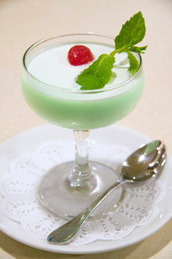

If you love to cook like we do, you should enjoy looking around this site.
Take a look at our Recipes and take the opportunity to complete our survey.



Green Jello
Janet Waters—Cooking for Family and Friends

My favorite pastime is cooking. I especially like cooking for family and friends. I was glad to find this web site about Native Cooking of Utah. I like to make sure the items I choose to cook meet the needs of my target audience...
More